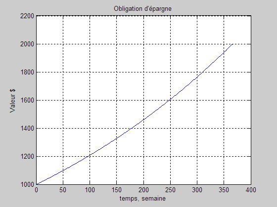

Intérêt composé hebdomadaire
Arrêt lorsque le capital est doublé.
Comme on ne connaît pas le nombre de cycles à effectuer, utiliser une boucle TantQue.
clear; clc; close all; taux = 0.19/100; % hebdomadaire Capital_initial = 1000; % dollars Capital(1) = Capital_initial; t(1) = 0; % semaine 0, temps initial i = 1; while(Capital < 2*Capital_initial) i = i + 1; t(i) = i; Capital(i) = Capital(i-1)*(1+taux); end plot(t,Capital,'-b'); grid on; ylabel('Valeur $'); xlabel('temps, semaine'); title('Obligation d''épargne');

fprintf(['Après %.0f semaines, l''obligation ',... 'vaut %.2f $.\n'],t(end),Capital(end));
Après 367 semaines, l'obligation vaut 2003.19 $.